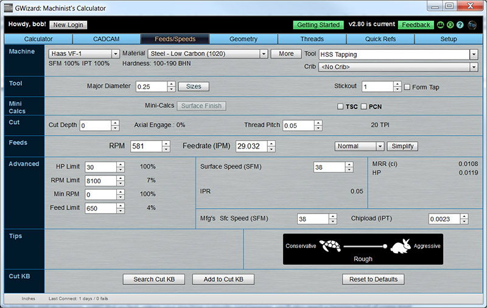
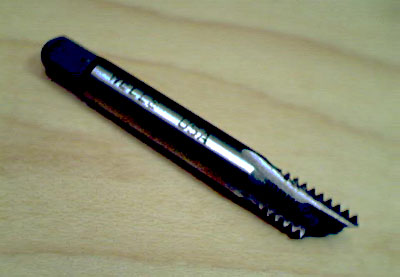

This article covers the details of how to do tapping on a CNC Machine.
Cutting Threads: Tapping, Single Point Threading, and Thread Milling
There are a variety of ways to make threads on CNC Machines, namely by tapping, single point threading, and by thread milling. Each one has pros and cons and is well suited to particular tasks. Single Point Threading is done on lathes, rather than mills, and involves a cutter whose shape is the thread form. That cutter is synchronized to the rotation of the part so it perfectly tracks the helix that is a thread. Successive passes cut deeper and deeper. Thread Milling is the equivalent for a milling machine. Instead of spinning the part, a thread mill is spun. It's teeth are shaped similarly to the thread form of the thread to be cut. The cutter describes a helix that is the same as the helix of the thread itself and so the thread is cut. You can see the common theme in both cases is synchronized motion in 2 dimensions to create a helix.
Tapping is no different in that motion needs to be synchronized, but the synchronization does not have to come from the machine. You've no doubt used a wood screw that cut its own threads in the wood as you turned it. A tap does the same thing. It is important that the downward motion of the tap into the workpiece proceed fast enough relative to the rotation of the spindle to match the threads. Otherwise, the tap will be stretched if the downward motion is too slow and the threads outrun the tap or compressed if the downward motion is so fast that the tap is being pushed down faster than the threads allow. Either one is bad. Taps are simpler in many ways than the other two types since the tap regulates the motion and the machine just has to be close to where the tap thinks it should be.
Let's look at the pros and cons on mills and lathes. First, we'll consider tapping versus thread milling for mills:
- Tapping can be quite a bit faster than thread milling, particular on a machine set up for rigid tapping.
- Tapping can usually thread deeper holes, particularly in harder materials such as steel.
- A different sized tap is required for each type of thread, whereas a thread mill can work for multiple sizes. You'll run out of spots in your tool changer faster with tapping than thread milling on a job that has a lot of different thread sizes.
- Thread milling can create both internal and external threads, whereas taps are only good for internal threads.
- A tap needs a tapered tip, so there is a limit to how close the threads can be to the bottom of blind hole. That limit means thread mills can thread closer to the bottom of the hole.
- Not only can a thread mill cut more than one thread size, but they can also adjust the exact tolerance of the thread. A tap cuts on thread, period. Custom threads are possible, whereas with a tap, you'd have to order a custom made tap which would be quite expensive.
- Thread mills can be used in slightly harder materials than taps. The tapping limit is about 50 Rc and for thread milling about 60Rc.
- Thread mills typically require much higher speed spindles than taps.
- Thread mills can do more than thread. For example, they may also be used to chamfer the hole.
- Taps can require more spindle power than thread mills.
- A tap is only good for one thread direction--right hand or left hand threads, not both. A thread mill can be used for either.
Bottom Line: Taps are chosen for speed and simplicity, whereas thread mills are chosen for flexibility.
What about lathes?
The pros and cons are almost the same, with single point threading standing in for thread milling.
Types of Taps
Left to right: Spiral flute tap, thread forming plug tap, thread forming bottoming tap...
A great variety of taps are available with varying advantages and disadvantages:
Hand Taps
Hand taps, typically bought at the local hardware store, are generally to be avoided. Buy some good quality taps some time and try tapping by hand versus the hardware store set of taps. You'll be surprised at how much better taps made for machines work.
Spiral Point Taps
These taps have a spiral cut with relief grooves. They're common and look like most of the hand taps you'll see around. A plug tap has a tapered end, while a bottom tap (intended for blind holes) has much less taper. They're cheaper than the other two types, but I typically prefer the other two. The primary disadvantage of these is they push the chips ahead of the tap--down into the hole in other words. This is not a big deal for through holes, but is a bad idea for blind holes.
Spiral Flute Taps
Spiral Flute Taps have an open spiral just like an endmill. Their primary advantage is they eject chips up and out of the hole. They're always preferable over spiral point taps when you have a blind hole.
Form or Roll Taps
Thread Forming taps don't cut threads at all. Instread they cold form. The taps themselves are less likely to break and the threads they make are stronger. If your application allows Form Taps, they are generally the best thing going for those reasons. Form Taps do require different feeds and speeds and they require a different starting hole size, so be aware of that before using one. While many believe they're only good for soft materials like aluminum, they can actually be used on materials up to a hardness of 36 HRC, which is about 340 BHN. That actually covers a surprisingly wide range of materials including a lot of steels.
Tapping Feeds and Speeds
Tapping Feeds and Speeds may be based on manufacturer's recommendations for type of tap (Form versus Cut Taps use differing feeds and speeds since they work so differently), tap material (you can get both HSS and Carbide Taps), and the material being tapped. Our G-Wizard Calculator software will handle all of this for you. Here is a typical Feeds and Speeds scenario for a Cutting Tap all set up in GW Calculator:

Calculating Tapping Feeds and Speeds with G-Wizard Calculator....
Setting up a Tapping Feeds and Speeds Calculation is easy:
1. Select your machine profile and material at top left.
2. Choose either a Carbide or HSS Tap from the Tool Menu. Or, if you have one in a pre-defined Tool Crib, select the Crib below and then pick it off the Tool menu.
3. Enter the thread Major Diameter. Enter the Thread Pitch. TPI will be displayed to the right of the Pitch. We're set up for a 1/4-20 tap in the screen shot.
4. If you're using a Form Tap, check the Form Tap box just to the right of the Stickout box.
Any further tweaks are optional, but the Tortoise-Hare Slider is one that makes it easy to go from Aggressive to Conservative if you're concerned that the tap is delicate or the material is touch. Feeds and Speeds will read out as you make each change to the settings.
Tapping Heads and Holders

Broken taps are a pain!
Having selected a tap to fit your needs, you're ready to stick it in the machine and go tapping, right? Not so fast, unless your machine supports rigid tapping, you'll also need a tapping head of some kind.
Rigid Tapping
Rigid tapping is highly prized for this reason and because it is generally faster than using a tapping head of any kind. To do rigid tapping requires an encoder on your spindle plus a controller smart enough to use the data from the encoder to precisely synchronize the feedrate based on the requirements of the thread being tapped. There are a couple of ways controllers approach rigid tapping. The most common method, used on a majority of controllers, is to let the spindle go, monitor its actual speed with some sort of encoder, and then vary the feedrate of the synchronized axis to mirror the right ratio of spindle rpm to feedrate for the thread being cut. Lately, the smaller machines, especially the “tapping and drilling” centers, use a type of rigid tapping often called “synchronous tapping.” In this method, both the spindle and the axis speeds are dynamically controlled as servos to get the best synchronized result. This is only possible on machines whose spindles have low enough mass and intertia that their rotation can be dynamically modified quickly enough, hence the use on relatively smaller machines.
Synchronous tapping can be done even faster than ordinary rigid tapping because there will be no overshoot of the spindle. With a heavier spindle there will always be a little overshoot. Smarter controls try to slow the spindle down as the bottom of the hole approaches, but that’s a bandaid relative to true synchronization. In addition, true synchronous tapping will experience less acceleration/deceleration related wear in the reversal at the bottom of the hole, so tap life can be better.
Many CNC machines, especially older and less expensive machines, are not set up for rigid tapping. For those machines, some form of tapping head must be used. The tapping head has some play along its axis and is spring-loaded so if the feedrate isn't precise, it just lets the thread itself govern the difference and the spring takes up any slack. It turns out that even when rigid tapping, it may pay off in terms of longer tap life to use a floating holder of some kind. Check out our blog post on this issue for details.
Tension Compression or Floating Tap Holders
If your machine is not equipped for Rigid Tapping, the next possibility is a floating tap holder, also called a "tension compression tap holder." These devices have a collet arrangement of some kind to hold the tap, and the collet chuck is capable of sliding up and down along the axis for a short distance. A spring keeps it positioned near the center of its travel. Dave DeCaussin's video on how he makes his own tension compression holders gives great insight into how they work:
Dave DeCaussin shows how he makes Tension Compression Tapping Heads...
The ability to float means that as long as the relationship between spindle rpms and feedrate is pretty close to the needs of the thread, all will be well and the tap will get the job done.
Tapping Heads
The next step up in complexity is to use a Tapping Heads. These heads are available from companies like Tapmatic, Procunier, and others. They include far more sophisticated mechanisms than Floating Tap Holders. Namely, they have an auto-reverse gearbox and a slip clutch. What that means is that as soon as the spindle starts to retract, the tapping head reverses direction automatically. Frequently the reversing gears operate at higher speed since it is possible to retract more quickly than one can cut threads. The slip clutch can be set to a torque rating based on tap size so you're less likely to break a tap through the application of too much torque.
Here is a great video from Tormach on the use of a Procunier Tapping Head in their CNC Mill:
Demonstration by Tormach of Procunier Tapping Head...
Pros and Cons
As with anything, there are a number of Pros and Cons with each method:
- Rigid Tapping is the fastest method, followed by a Tapping Head which is typically about 25% faster than a Tension Compression Holder. The reason is the Tapping Head can reverse much more quickly and can also typically be programmed to tap more quickly and retract more quickly as less safety margin is needed. There is an exception to this rule which is that a Tapping Head can be faster for very small taps depending on the acceleration/deceleration and rpm capabilities of your machine's spindle.
- For machines that don't do Rigid Tapping (which in itself is often an expensive option), Tension Compression Tap Holders are the cheapest answer for tapping. A Tapping Head is much more expensive.
- In most cases, a Tapping Head cannot be used with an Automatic Tool Changer. It needs a stop to keep it from rotating and often they're too bulky to fit into an ATC. There are exceptions, but obvious the loss of automatic tool change capability can be a real disadvantage for a Tapping Head.
- Through Spindle Coolant can be very helpful as taps like to be lubricated. It's often difficult to arrange for TSC with Tapping Heads and Tension Compression Holders.
- If the spring in a Tension Compression Holder breaks or the mechanism in a Tapping Head fails, you're going to have real problems. Rigid Tapping is much more reliable for that reason.
- Tool Holders for Rigid Tapping are much less expensive usually than Tension Compression Holders or Tapping Heads. They are also often more compact, which can be useful when clearances or travels are tight.
Summary: Be very happy if your machine has Rigid Tapping. If it doesn't you're going to have to evaluate the tradeoffs of pure tapping speed for a given tap (Tapping Head) versus tool changer capability and cheaper holders (Tension Compression Holder).
Tapping Fluid
As mentioned, taps really like some lubrication to prolong their life. For many cases, the machine's flood coolant suffices. But for more difficult jobs, a dedicated tapping fluid may be needed. Most everyone has heard of Tap Magic as one possibility, but the machinists in places like Practical Machinist swear that Castrol's Moly-Dee is the true magical stuff for making taps work better. A 16oz supply goes a long way and a gallon almost seems to last forever. Do yourself a favor and get some of this magic elixir for tap longevity!
Most CNC'ers hate the idea of using Tapping Fluid. They don't want to have to stand in the door brushing it on the tap. I can't blame them, it's boring and moderately dangerous. But there is another way. Get one of those "No-Tip" containers for tapping fluid. Put it on the table and program the CNC to dip the tap into the container between holes.
Start With the Right Hole!
What if I told you starting with the right hole was going to make more difference than almost anything else for your tapping? I don't know if I can quite claim that's the case if you're using the hole size your tap maker recommends, but there are ways to optimize further. Specifically, you will want to take a look at the potential to use a larger hole to reduce the effort required to tap. This will also reduce the holding power of the threads, but you may be surprised at how far you can go before you create a problem. We've written an entire article about tap drill size and it is worth your time to stop right here and go check it out.
Just to make sure you know what's at stake, here's the kicker:
Imagine the fully formed internal thread. Each thread rises from valley to peak. Now suppose you ran a twist drill down the hole and shaved off some of the peaks. They’re pretty delicate anyway and will wear off quickly. In fact, they contribute surprisingly little strength. A 100% thread is only 5% stronger than 75% thread. But here is the real kicker:
That 100% thread requires 3 times the power to tap!
3 times the power to tap generally means 3 times as likely to break a tap. At least that's how Mr Murphy runs things in my shop.
GCode for Tapping
That pretty well covers Tapping, but leaves open the question of how to program the various tapping alternatives on a CNC. That's a subject better left to our GCode Tutorial, so we'll provide a detailed article over there to help you out with it.